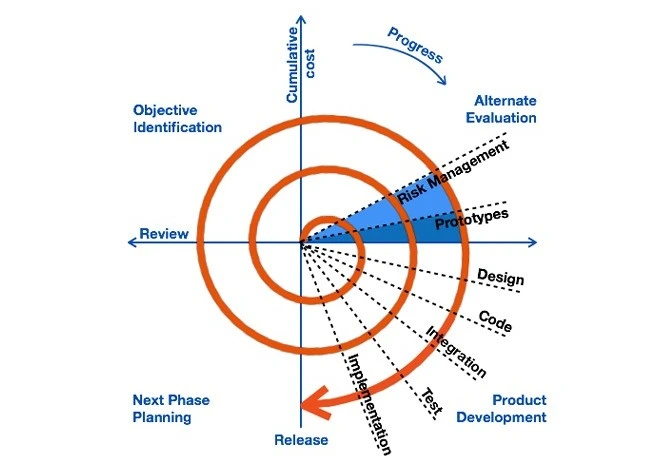
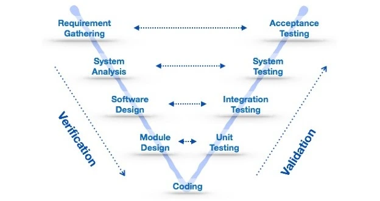

Software Development Life Cycle Models

Software Development Life Cycle (SDLC) models are frameworks that define the process used by organizations to build software applications. Each model provides a structured sequence of stages in software engineering. Here are the most common models, their characteristics, and when to use them:
1. Waterfall Model

The Waterfall model is a linear and sequential approach where each phase must be completed before the next begins. It’s simple but lacks flexibility for changes later in the process.
- Easy to understand and manage
- Best suited for projects with well-defined requirements
- Not ideal for complex or changing requirements
2. Spiral Model
The Spiral model combines iterative development with risk analysis. Each loop (spiral) represents a development phase.
- Risk-driven approach
- Highly flexible and iterative
- Best for large, high-risk projects
3. V-Model (Validation & Verification)
This model emphasizes testing at each development stage. It’s an extension of the Waterfall model with a strong focus on validation and verification.
- Each development phase has a corresponding testing phase
- Improves quality and reliability
- Best for projects with clear testing requirements
4. Agile Model

Agile promotes continuous iteration and collaboration. Work is divided into small increments (sprints) with frequent feedback.
- Highly flexible and adaptive
- Promotes teamwork and user involvement
- Best for dynamic and fast-changing environments
5. Prototype Model

A working prototype is built early to understand user needs. Feedback helps refine the system before full development.
- Useful when requirements are unclear
- Improves client-developer communication
- Can lead to quicker user acceptance
6. Incremental Model

Software is developed in increments with each release adding functionality. Ideal for systems needing quick delivery of basic functions.
- Delivers working software early
- Easier testing and debugging
- Requires good initial planning
7. Iterative Model

Software is developed through repeated cycles (iterations). Feedback is incorporated at each stage.
- Focuses on evolving requirements
- Ideal for large systems developed over time
- Can identify issues early
8. RAD (Rapid Application Development)

RAD emphasizes quick development using reusable components, user feedback, and iterative prototypes.
- Rapid delivery using component-based design
- Active user participation
- Best for projects with tight deadlines